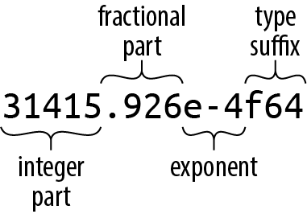
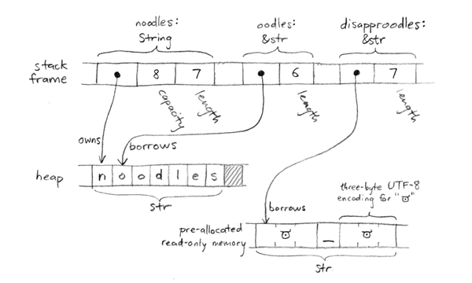

第三章 基本类型
宇宙的基本要素是原子和空白的空间；其余的一切都只是人们想象出来的存在而已。
迪奥根尼斯·拉尔泰斯（阐述德谟克利特哲学）
本章介绍了 Rust 中用于表示各种值的基礎类型：整数和浮点数、字符串和字符、向量和数组等。这些源级别的类型在机器级别都有对应的实现，并且具有可预测的成本和性能表现。
与 JavaScript 或 Python 这样的动态类型语言相比，Rust 需要用户事先进行更多的规划。你必须明确函数的定义参数、返回值、结构体字段等元素的类型。至于其他方面，Rust 的类型推断功能通常会自动为你确定各种类型的处理。例如，你可以像这样明确一个函数的每种类型的处理方式：
fngrade_cutoffs(tier_size:u32)->Vec<u32>{letmutcutoffs:Vec<u32>=Vec::<u32>::new();fortierin1u32..5u32{cutoffs.push(100u32-tier*tier_size);}cutoffs}
但是，这样的代码显得非常混乱且重复。根据函数的返回类型来看，显然 cutoffs 必须是一个 Vec<u32> ，即一个由 32 位有符号整数组成的向量；其他类型是无法适用的。因此，该向量中的每个元素也必须是 u32 类型，那么所有需要相乘或相减的数字也必然都是 u32 类型。这正是 Rust 类型推断所适用的逻辑，它让我们可以更简洁地编写代码：
fngrade_cutoffs(tier_size:u32)->Vec<u32>{letmutcutoffs=Vec::new();fortierin1..5{cutoffs.push(100-tier*tier_size);}cutoffs}
这两种定义是完全相等的。无论采用哪种方式，Rust 都会生成相同的机器代码。类型推断功能使得动态类型语言的代码更具可读性，同时还能在编译阶段捕获类型错误。
这一章的其余部分介绍了 Rust 中的类型系统，从基础开始逐步讲解。表 3-1 展示了 Rust 中常见的类型示例。其中包括 Rust 的基本类型、标准库中的一些常用类型，以及一些用户自定义类型的例子。
| 类型 | 描述 | 价值观 |
|---|---|---|
i8, i16, i32, i64, i128u8, u16, u32, u64, u128 |
有符号和无符号整数， 给定位宽度的 |
42, -5i8, 0x400u16, 0o100i16, 20_922_789_888_000u64,b'*' ( u8 字节字面量) |
isize, usize |
有符号和无符号整数， 与机器上的地址大小相同（通常为 64 位） |
137,-0b0101_0010_isize,0xffff_fc00_usize |
f32, f64 |
IEEE 浮点数标准 单精度和双精度 |
1.0, 3.14159f32, 6.0221e23 |
bool |
布尔逻辑 | true, false |
(char, u8, i32) |
元组：允许使用多种类型的数据 | ('%', 0x7f, -1) |
() |
“单位”（空元组） | () |
struct S { |
名为字段的结构体 | S { x: 120.0, y: 209.0 } |
struct T(i32, char); |
元组结构 | T(120, 'X') |
struct E; |
类似单元的结构；没有字段 | E |
enum Attend { |
枚举，代数数据类型 | Attend::Late(5), Attend::OnTime |
Box<Attend> |
框：持有指向堆中值的指针 | Box::new(Late(15)) |
&i32, &mut i32 |
共享和可变的引用：这种非属于自己的指针必须确保其不会超出其所指向对象的生命周期。 | &s.y, &mut v |
String |
UTF-8 编码的字符串，动态调整大小 | "ラーメン: ramen".to_string() |
&str |
引用 str ：指向 UTF-8 编码文本的非自有指针 |
"そば: soba", &s[0..12] |
char |
Unicode 字符，占用 32 位空间 | '*', '\n', '字', '\x7f', '\u{CA0}' |
[f64; 4], [u8; 256] |
数组，固定长度；所有元素均为同一类型 | [1.0, 0.0, 0.0, 1.0],[b' '; 256] |
Vec<f64> |
向量，长度可以变化；所有元素都是同一种类型 | vec![0.367, 2.718, 7.389] |
&[u8], &mut [u8] |
对切片的引用：指的是数组或向量中的一个部分，该部分包含指针和长度信息。 | &v[10..20], &mut a[..] |
Option<&str> |
可选值：要么是 None （不存在），要么是 Some(v) （存在，值为 v ） |
Some("Dr."), None |
Result<u64, Error> |
该操作的结果可能失败：要么返回成功值 Ok(v) ，要么返回错误信息 Err(e) |
Ok(4096), Err(Error::last_os_error()) |
&dyn Error, &mut dyn Read |
所谓“特征对象”，指的是那些实现了特定一组方法的任何值。 | &err as &dyn Error,&mut file as &mut dyn Read |
fn(&str) -> bool |
函数指针 | str::is_empty |
| （闭合类型没有书面表达方式） | 关闭/终止 | |a, b| { a*a + b*b } |
本章涵盖了上述大多数类型的内容，以下这些类型则不在讨论范围内：
-
我们为struct类型专门编写了第 9 章。 -
我们将专门用一章来介绍枚举类型，即第 10 章。 -
我们在第 11 章中介绍了特征对象的相关内容。 -
我们在这里简要介绍了String和&str的基本内容，但更多细节请参考第 17 章。 -
我们在第 14 章中讨论了函数类型与闭包类型的相关内容。
数字类型
Rust 的类型系统的基础是由固定长度数字类型组成的集合，这些类型的选择是为了与几乎所有现代处理器在硬件层面直接实现的类型相匹配。
Rust 中数值类型的名称遵循一定的规律，这些名称描述了这些类型在比特位上的宽度以及它们所使用的表示方式（参见表 3-2）。
| 大小（比特数） | 无符号整数 | 有符号整数 | 浮点运算 |
|---|---|---|---|
| 8 | u8 |
i8 |
|
| 16 | u16 |
i16 |
|
| 32 | u32 |
i32 |
f32 |
| 64 | u64 |
i64 |
f64 |
| 128 | u128 |
i128 |
|
| 常用词汇 | usize |
isize |
在这里，“机器词汇”指的是在运行该代码的机器上，具有与地址相同大小的值，即 32 位或 64 位。
整数类型
Rust 中无符号整数类型利用其整个取值范围来表示正数和零值（参见表 3-3）。
| 类型 | 范围/幅度 |
|---|---|
u8 |
0 到 2 8 −1（0 到 255） |
u16 |
0 到 2 16 −1（0 到 65,535） |
u32 |
0 到 2 32 −1（0 到 4,294,967,295） |
u64 |
0 到 2 64 −1（即 0 到 18,446,744,073,709,551,615，或者 18 个 quintillion） |
u128 |
0 到 2 128 −1（0 到约 3.4×10 38 ） |
usize |
0 到 2 32 −1，或者 2 64 −1 |
Rust 中的整数类型采用二进制补码表示法，其位模式与对应的无符号类型相同，能够涵盖各种正的和负的数值（参见表 3-4）。
| 类型 | 范围/幅度 |
|---|---|
i8 |
−2 7 到 2 7 −1（从−128 到 127） |
i16 |
−2 15 到 2 15 −1（从−32,768 到 32,767） |
i32 |
−2 31 到 2 31 −1（范围：−2,147,483,648 到 2,147,483,647） |
i64 |
−2 63 到 2 63 −1（9,223,372,036,854,775,808 到 9,223,372,036,854,775,807） |
i128 |
−2 127 到 2 127 −1（大约从 -1.7×10 38 到 +1.7×10 38 ） |
isize |
要么是从-2 31 到 2 31 减去 1，要么是从-2 63 到 2 63 减去 1。 |
Rust 中使用 u8 类型来表示字节值。例如，从二进制文件或套接字中读取数据时，会得到一系列 u8 类型的值。
C/C++程序员需要注意，在 Rust 语言中，并没有一种统一的“字符”类型用于表示文本和二进制数据。正如我们在本章后续部分讨论字符串和字符时将会看到的，Rust 的 char 类型是一种 Unicode 字符类型，而不是整数类型；这与 C 语言的 char 类型截然不同。
usize 和 isize 类型类似于 C 和 C++ 中的 size_t 和 ptrdiff_t 。它们的精度与目标机器上的地址空间大小相匹配：在 32 位架构中，它们长度为 32 位；在 64 位架构中，它们长度为 64 位。在 Rust 中，数组索引必须采用 usize 类型。表示数组或向量的大小，或者某种数据结构中元素数量的数值，通常也采用 usize 类型。
在 Rust 中，整数字面量可以附加一个后缀来表明其类型：例如 42u8 表示 u8 类型的值，而 1729isize 则表示 isize 类型。如果整数字面量没有类型后缀，Rust 会等到通过某种方式确定其实际使用时才会确定其类型。比如，当整数被存储在一个特定类型的变量中，或者被传递给一个期望特定类型参数的函数，或者与另一个特定类型的数值进行比较时，Rust 才会确定其类型。如果代码没有提供这样的线索，Rust 会默认使用 i32 作为类型。
为了让较长的数字更易于阅读，可以在数字之间插入下划线。例如，最大的十六进制数值可以写作 4_294_967_295 。下划线的位置并不重要，因此可以将十六进制或二进制数分成四位一组，比如 0xffff_ffff ，或者将类型后缀与数字分开，比如 127_u8 。
你可以使用 as 运算符将一个整数类型转换为另一个整数类型：
assert_eq!(10_i8asu16,10_u16);assert_eq!(0xcafedad_u64asu8,0xad_u8);// value too big for u8, truncated
标准库提供了一些作为整数方法的操作。例如：
assert_eq!(2_u16.pow(4),16);// exponentiationassert_eq!((-4_i32).abs(),4);// absolute valueassert_eq!(0b101101_u8.count_ones(),4);// population countassert_eq!(12_i32.max(37),37);// maximum of two values
这类东西有几十种。你可以在在线文档中查找相关信息，位于“基本类型 i32 ”以及相关的章节里。
在实际代码中，通常不需要像这里那样明确写出类型后缀，因为上下文本身就决定了类型。不过，当确实需要指定类型后缀时，错误信息可能会令人意外。例如，以下代码无法编译：
println!("{}",(-4).abs());
Rust 抱怨说：
error: can't call method `abs` on ambiguous numeric type `{integer}`
在像这样的情况下，当整数的类型不明确时，Rust 通常会默认使用 i32 来表示。不过，在调用方法的情况下，这种默认方式会导致错误。Rust 在查找某个值的对应方法之前，必须先确定该值的类型。因此，解决方案就是明确说明你想要的类型，可以使用后缀来表示，或者直接使用特定类型的函数来进行操作。
println!("{}",(-4_i32).abs());println!("{}",i32::abs(-4));
需要注意的是，方法调用的优先级高于一元前缀运算符。因此，在对负值应用方法时需要注意这一点。如果第一个语句中没有使用括号来明确 -4_i32 的优先级，那么 -4_i32.abs() 就会对正值 4 应用 abs 方法，从而得到正值 4 ，之后再将其取反，得到 -4 。
处理整数溢出问题
整数运算可能会出现溢出情况，导致结果超出 Rust 整数类型的范围。
fnmidpoint(lo:i32,hi:i32)->i32{(lo+hi)/2}// panic: attempt to add with overflow (in debug builds only!)letm=midpoint(7,i32::MAX);
midpoint 这个函数看起来效果还不错，但是当使用足够大的参数调用时， (lo + hi) 得到的结果会超出 i32 的范围。在 Java 中，这种情况会导致结果变成负数。此时，函数会将该负数除以二，从而得到一个错误的结果。在 C 或 C++ 语言中，整数溢出属于未定义行为。
这种有条件的行为并不总是理想的，因此整数类型提供了一些方法，可以让你明确指定自己的需求。这些整数运算方法大致可以分为五类：
-
包装操作返回的值相当于数学上正确的结果，该结果模去该范围的值后得到的结果。// The first product can be represented as a u16;// the second cannot, so we get 250000 modulo 2¹⁶.assert_eq!(100_u16.wrapping_mul(200),20000);assert_eq!(500_u16.wrapping_mul(500),53392);// Operations on signed types may wrap to negative values.assert_eq!(500_i16.wrapping_mul(500),-12144);在发布版本中，
*运算符确实如此操作。wrapping方法的优势在于，它们在所有版本中都具有相同的行为。 -
严格的运行方式会在所有构建版本中提供调试模式下的行为：在超出范围时会发生 panic。letx=usize::MAX.strict_mul(2);// panic (in all builds) -
如果数学上正确的结果可以表示为该类型的值，那么检查后的操作会返回Some(v)；如果无法表示，则会返回None。例如：// The sum 10 + 20 fits in a u8, but 100 + 200 doesn't.assert_eq!(10_u8.checked_add(20),Some(30));assert_eq!(100_u8.checked_add(200),None);// Oddly, signed division can overflow too, in one particular case.// A signed n-bit type can represent -2ⁿ⁻¹, but not 2ⁿ⁻¹.assert_eq!((-128_i8).checked_div(-1),None); -
饱和操作会返回最接近数学上正确结果的可表示值。换句话说，结果会被“限制”在类型所能表示的最大最小值范围内。assert_eq!(32760_i16.saturating_add(10),32767);assert_eq!((-32760_i16).saturating_sub(10),-32768); -
当操作发生溢出时，会返回一个元组。其中，result是该函数封装版本会返回的值，而overflowed是一个bool，用于指示是否发生了溢出情况。assert_eq!(255_u8.overflowing_sub(2),(253,false));assert_eq!(255_u8.overflowing_add(2),(1,true));
这些位移操作 shl （左移）、 << （右移）以及 shr （三进位右移）与常规模式有所不同。对于这些操作来说，需要检查的是位移距离，而不是最终的结果；因为位移结果可能会超出范围，从而导致 C++语言中未定义的行为。因此，对这些方法的处理需要针对位移距离参数进行“检查”、“封装”或“处理溢出情况”。
assert_eq!(10_u64.wrapping_shl(65),20);assert_eq!(10_u64.checked_shr(65),None);
浮点类型
Rust 提供了常见的单精度和双精度浮点类型（参见表 3-5）。Rust 中的 f32 和 f64 对应于 C/C++和 Java 中的 float 和 double 类型，或者 Go 中的 float32 和 float64 类型。这两种类型都遵循 IEEE 754 浮点标准。它们包括正无穷和负无穷，不同的正零值和负零值，以及一种表示“非数字”值的类型。
| 类型 | 精确性 | 范围/幅度 |
|---|---|---|
f32 |
IEEE 单精度浮点数表示方式，至少包含 6 位小数位。 | 大约±3.4 × 10^4 磅 |
f64 |
IEEE 双精度类型（至少包含 15 个小数位） | 大约±1.8 × 10^4 磅 |
浮点数的通用形式如图 3-1 所示。

图 3-1. 浮点字面量
浮点数的每个部分在整数部分之后都是可选的，但至少必须有一个分数部分、指数或类型后缀存在，这样才能将其与整数字面量区分开来。在 Rust 中，永远不会将浮点类型赋值给整数字面量，反之亦然。
如果一个浮点型字面量没有类型后缀，Rust 会检查上下文以确定该值的使用方式，这与处理整数字面量时的方法相同。默认情况下，该值为 f64 。
类型 f32 和 f64 拥有与 IEEE 标准相关的常量，例如 INFINITY 、 NEG_INFINITY （负无穷大）、 NAN （非数字值），以及 MIN 和 MAX （最大和最小有限值）。
assert!((-1./f32::INFINITY).is_sign_negative());assert_eq!(-f32::MIN,f32::MAX);
f32 和 f64 类型提供了丰富的数学计算功能；例如， 2f64.sqrt() 可以实现双精度平方根的计算。以下是一些示例：
assert_eq!(5f32.sqrt()*5f32.sqrt(),5.);// exactly 5.0, per IEEEassert_eq!((-1.01f64).floor(),-2.0);
这些方法被记录在了“基本类型 f32 ”和“基本类型 f64 ”这一节中。而独立的模块 std::f32::consts 和 std::f64::consts 则提供了各种常用的数学常数，例如 E 、 PI 以及根号二等。
与整数类型类似，在实际代码中，通常不需要在浮点常量上加上类型后缀。不过，如果你确实需要加上类型后缀，那么可以在常量上加上类型说明，或者直接在函数中声明类型即可。
println!("{}",(2.0_f64).sqrt());println!("{}",f64::sqrt(2.0));
与 C 语言和 C++不同，Rust 不会隐式地进行数值类型的转换。如果一个函数期望接收 f64 类型的参数，那么将 i32 类型的参数传递给该函数将会引发错误。实际上，Rust 甚至不会将 i16 类型的参数隐式转换为 i32 类型。尽管所有的 i16 类型都在 i32 类型的范围内，但您仍然可以使用 as 运算符来明确地进行转换： i as f64 或 x as i32 。
我们在“类型转换”部分详细解释了各种转换的行为方式。
布尔类型
Rust 中的布尔类型 bool 有两种常见的值，即 true 和 false 。像 == 和 < 这样的比较运算符会产生 bool 的结果；而 2 < 5 的值则等于 true 。
Rust 中的 as 运算符可以将 bool 的值转换为整数类型：
assert_eq!(falseasi32,0);assert_eq!(trueasi32,1);
不过， as 无法从数字类型转换为 bool 类型。相反，你必须使用像 x != 0 这样的显式比较语句来进行转换。
虽然 bool 只需要一个比特位就能表示，但 Rust 在内存中为一个 bool 值使用了整个字节。因此，你可以创建一个指向该值的指针。
元组
元组是由不同类型的值组成的组合，可以是两元素、三元素、四元素、五元素等（因此也称为 n 元组或 tuple）。你可以将元组表示为一系列值，这些值用逗号分隔，并且被括号包围。例如， (1984_i32, false) 就是一个元组，其中第一个元素是一个整数，第二个元素是一个布尔值；这个元组的类型就是 (i32, bool) 。对于元组 t ，你可以像访问普通值一样访问它的各个元素，即 t.0 、 t.1 等等。
元组与数组有很大的不同。首先，元组的每个字段都可以是不同的类型，而数组的元素则必须都是同一类型。此外，虽然可以通过变量索引来访问数组中的元素，比如 arr[i] ，但元组无法实现这一功能。你可以通过数字“名称”来访问某个字段，比如 t.1 ，但无法写成 t.i 或 t[i] 来访问第 i 个字段。
fnsplit_at(&self,mid:usize)->(&str,&str);
返回类型 (&str, &str) 是一个包含两个字符串切片的元组。你可以使用模式匹配语法将返回值中的每个字段分配给不同的变量：
lettext="I see the eigenvalue in thine eye";let(head,tail)=text.split_at(21);assert_eq!(head,"I see the eigenvalue ");assert_eq!(tail,"in thine eye");
这比原句要清晰得多。
lettext="I see the eigenvalue in thine eye";lettemp=text.split_at(21);lethead=temp.0;lettail=temp.1;assert_eq!(head,"I see the eigenvalue ");assert_eq!(tail,"in thine eye");
你还会看到，元组也被用作一种简洁的结构类型。例如，在第二章中的 Mandelbrot 程序中，我们需要传递图像的宽度和高度给那些用于绘制图像并将其写入磁盘的函数。我们可以定义一个结构体，其中包含 width 和 height 两个成员，但这样的表达方式对于如此简单的事情来说有些冗余，因此我们直接使用元组来表示：
/// Writes the buffer `pixels`, whose dimensions are given by `bounds`, to the/// file named `filename`.fnwrite_image(filename:&str,pixels:&[u8],bounds:(usize,usize),)->Result<(),std::io::Error>{...}
参数 bounds 的类型是 (usize, usize) ，它是一个由两个 usize 值组成的元组。诚然，我们也可以直接写出独立的 width 和 height 参数，不过无论哪种方式，机器代码的实现效果都差不多。这只是为了增加代码的清晰度而已。我们认为“大小”只是一个值，而不是两个独立的数值，使用元组就能让我们表达出这样的意思。
另一种常用的元组类型是指零元组 () 。这种类型传统上被称为“单位类型”，因为它只包含一个值，也写作 () 。在 Rust 语言中，当没有有意义的值需要传递时，就会使用单位类型；不过，无论何种情况，上下文都需要某种类型的支持。
fnsleep(duration:Duration);
这种特殊的写法完全省略了函数的返回类型，这只是返回单位类型的简写形式而已。
fnsleep(duration:Duration)->();
同样，之前提到的 write_image 示例函数的返回类型也是 Result<(), std::io::Error> 。这意味着，如果出现问题，该函数会返回 std::io::Error 类型的值；而当操作成功时，则不会返回任何值。
指针类型
在现代编程语言中，这种情况并不常见，原因有两点。首先，许多编程语言中的值是不嵌套的。例如，在 Java 中，如果 class Rectangle 包含一个字段 Vector2D upperLeft; ，那么 upperLeft 就指的是另一个独立创建的 Vector2D 对象。在 Java 中，对象从不会实际包含其他对象。因此，这种语言不需要指针类型，因为每一个 Java 对象类型实际上都相当于一种指针类型。
Rust 需要多种指针类型的第二个原因是，没有垃圾回收机制来负责管理内存。不过，内存仍然需要被妥善管理。Rust 程序必须决定何时分配内存、分配多少内存，以及何时安全地释放这些内存。在 Rust 中，这些内存管理相关的规则就体现在指针类型本身中。虽然乍一看这些可能会有些难以理解，但不用担心——我们在后面的章节会详细解释所有这些类型。
&T和&mut T——我们在第 2 章中已经展示了一些引用示例。引用指的是“借用”的值，而不需要承担任何清理工作的责任。因此，引用完全不需要内存管理方面的开销。
std::rc::Rc<T>和std::sync::Arc<T>——这些是 Rust 对引用计数的支持。与Box<T>指针不同，多个Rc<T>指针可以指向同一个堆分配到的T对象。当程序中的多个部分需要访问同一个共享资源时，这种机制非常有用。Rust 能够追踪有多少个Rc指针指向同一个共享值。当最后一个指向该对象的Rc指针被删除后，该对象的内存就会被释放。Arc<T>也有类似的功能，但它使用了原子引用计数，因此Arc对象可以在多个线程之间共享。
*const T和*mut T——这些是 Rust 中的原始指针类型，相当于 C 语言中的指针。只有在使用unsafe块时，才能解引用这些指针，而这是通过明确放弃 Rust 的安全保证来实现的。在调用 C 语言库时，或者从零开始实现某种新的数据结构时，可能需要使用原始指针。我们在第 23 章之前不会再讨论这些话题了。
所有这些类型都指向类型 T 的值；它们的区别仅在于内存管理策略以及关于可变性和安全性的相关规则。
Java 并不需要这么多的种类划分：垃圾收集器提供了一种便捷且统一的内存管理策略。不过，C++程序员可能会认出这些符号代表 C++标准库中的智能指针类型。例如， Box<T> 相当于 C++的 std::unique_ptr<T> ，而 Arc<T> 则相当于 C++的 std::shared_ptr<T> 。
除了原始指针之外，Rust 中的指针类型都是不可置空的。对于可选指针，可以使用 Option ；而 None 则相当于 null 。这种指针类型并没有额外的内存开销； Option<&T> 的大小与 &T 相同。
数组、向量和切片
Rust 提供了三种方式来在内存中表示一系列值：
-
类型
[T; N]表示一个固定大小的数组，该数组包含N个类型为T的元素。数组的大小在编译时就已经确定，属于类型的固有属性；无法对数组进行扩展或缩小。 -
类型Vec<T>，被称为T的向量，是一种动态分配、可以扩展的值序列，这些值的类型為T。向量的元素存储于堆内存中，因此你可以根据需要调整向量的大小：向其中添加新元素、将其他向量附加到该向量上、删除某些元素等等。 -
类型&[T]和&mut [T]都是引用类型，它们指向向量或数组元素的某个连续子序列。
当得到这三种类型中任何一种的类型值 v 时，表达式 v.len() 会返回 v 中的元素个数；而 v[i] 则指的是 v 中第 i 个元素。第一个元素就是 v[0] ，最后一个元素则是 v[v.len() - 1] 。Rust 会检查 i 的值是否始终处于这个范围内；如果不在范围内，表达式将会引发异常。 v 的长度可能为 0，在这种情况下，任何尝试对其进行索引的操作都会引发异常。 i 必须是一个 usize 类型的值；你不能使用其他任何整数类型作为索引。
数组
有几种方式可以表示数组中的值。最简单的方法是在方括号中列出一系列值：
letlazy_caterer:[u32;6]=[1,2,4,7,11,16];lettaxonomy=["Animalia","Arthropoda","Insecta"];assert_eq!(lazy_caterer[3],7);assert_eq!(taxonomy.len(),3);
在一般情况下，当一个长数组被填充了某种值时，你可以这样表示： [V; N] 。其中， V 表示每个元素的值， N 表示数组的长度。例如， [true; 10000] 表示一个由 10,000 个 bool 元素组成的数组，这些元素的值都设置为 true 。
letmutsieve=[true;10000];foriin2..100{ifsieve[i]{letmutj=i*i;whilej<10000{sieve[j]=false;j+=i;}}}assert!(sieve[211]);assert!(!sieve[9876]);
你会看到这种语法用于表示固定大小的缓冲区： [0u8; 1024] 就是一个大小为 1-kilobyte 的缓冲区，其中填充了零值。Rust 没有表示未初始化数组的语法。（一般来说，Rust 确保代码永远无法访问未初始化的内存。）
数组的长度是其类型的一部分，在编译时就已经确定。如果 n 是一个变量，那么你就无法使用 [true; n] 来表示由 n 个元素组成的数组。考虑到这一严重的限制，你可能会觉得数组并不那么有用。不过，在大多数情况下，你确实是对的！数组非常高效：小型数组可以存储在栈上或结构体内，而无需分配更多的堆内存。一个 8 字节的数组甚至可以容纳在一个机器寄存器里！但在日常编程中，大多数列表的长度都是可变的。因此，你需要使用向量来表示这种可变长度的数组。
向量
向量 Vec<T> 是一个可调整大小的数组，其元素类型为 T ，该数组存储在堆内存中。
创建向量有多种方法。最简单的方法是使用 vec! 宏，这样就能得到一种类似于数组字面量的向量表示方式。
letmutprimes=vec![2,3,5,7];assert_eq!(primes.iter().product::<i32>(),210);
不过，当然了，这是一个向量，而不是数组。因此，我们可以动态地向其中添加元素：
primes.push(11);primes.push(13);assert_eq!(primes.iter().product::<i32>(),30030);
你也可以通过重复某个值若干次来构建向量，同样可以使用类似数组字面量的语法来实现这一点：
fnnew_pixel_buffer(rows:usize,cols:usize)->Vec<u8>{vec![0;rows*cols]}
vec! 宏相当于调用 Vec::new 来创建一个新的空向量，然后将元素添加到该向量上：
letmutpal=Vec::new();pal.push("step");pal.push("on");pal.push("no");pal.push("pets");assert_eq!(pal,vec!["step","on","no","pets"]);
另一种方法是根据迭代器产生的数值来构建一个向量：
letv:Vec<i32>=(0..5).collect();assert_eq!(v,[0,1,2,3,4]);
在使用 collect 时，你通常需要指定类型，因为我们在这里所做的就是如此。因为 collect 可以创建多种类型的集合，而不仅仅是向量。通过指定 v 的类型，我们就明确了想要创建哪种类型的集合。
Vec 是 Rust 中一种非常重要的类型——几乎在任何需要动态大小列表的场景中都会用到它。因此，还有许多其他方法可以用来创建新的向量或扩展已有的向量。我们将在第 16 章中详细介绍这些方法。
如果你事先知道向量需要包含多少个元素，那么就可以使用 Vec::with_capacity 而不是 Vec::new 来创建向量。这样，向量从一开始就具有足够的存储空间来容纳所有元素。之后，你可以逐个将这些元素添加到向量中，而无需进行任何重新分配操作。 vec! 宏就是使用了这种技巧，因为它知道最终向量将包含多少个元素。请注意，这只是确定了向量的初始大小；如果你使用的元素数量超过了估计的数量，向量会像往常一样扩大其存储容量。
许多库函数都会寻找使用 Vec::with_capacity 而不是 Vec::new 的机会。例如，在 collect 这个例子中，迭代器 0..5 事先就知道它将产生五个值，而 collect 函数则利用这一点来预先分配一个具有适当容量的向量。我们将在第十五章中了解这是如何实现的。
就像向量的 len 方法可以返回其包含的元素个数一样，其 capacity 方法则可以返回在不重新分配内存的情况下能够容纳的元素个数。
letmutv=Vec::with_capacity(2);assert_eq!(v.len(),0);assert_eq!(v.capacity(),2);v.push(1);v.push(2);assert_eq!(v.len(),2);assert_eq!(v.capacity(),2);v.push(3);assert_eq!(v.len(),3);// Typically prints "capacity is now 4":println!("capacity is now {}",v.capacity());
最后显示的容量并不保证正好是 4，因为向量中只存储了三个值，所以至少会是 3。
你可以在向量中的任意位置插入或删除元素。不过，这些操作会将受影响的元素之后的所有元素向前或向后移动一定的距离，因此当向量长度较长时，这些操作可能会比较慢。
letmutv=vec![10,20,30,40,50];// Make the element at index 3 be 35.v.insert(3,35);assert_eq!(v,[10,20,30,35,40,50]);// Remove the element at index 1.v.remove(1);assert_eq!(v,[10,30,35,40,50]);
你可以使用 pop 方法来删除最后一个元素并返回它。更准确地说，从 Vec<T> 中弹出一个值后，会得到一个 Option<T> 。如果向量已经为空，那么结果就是 Some(v) ；如果向量的最后一个元素为 v ，那么结果就是 None 。
letmutv=vec!["Snow Puff","Glass Gem"];assert_eq!(v.pop(),Some("Glass Gem"));assert_eq!(v.pop(),Some("Snow Puff"));assert_eq!(v.pop(),None);
你可以使用 for 循环来遍历一个向量：
// Get our command-line arguments as a vector of Strings.letlanguages:Vec<String>=std::env::args().skip(1).collect();forlinlanguages{println!("{l}: {}",ifl.len()%2==0{"functional"}else{"imperative"},);}
当使用一系列编程语言来运行这个程序时，会发现一些有趣的现象：
$cargorunLispSchemeCC++FortranCompiling proglangs v0.1.0 (/home/jimb/rust/proglangs)Finished dev [unoptimized + debuginfo] target(s) in 0.36sRunning `target/debug/proglangs Lisp Scheme C C++ Fortran`Lisp: functionalScheme: functionalC: imperativeC++: imperativeFortran: imperative$
终于，我们得到了一个令人满意的函数式语言的定义。
尽管 Vec 具有非常重要的作用，但它仍然是一种在 Rust 语言中定义的普通类型，并非语言本身所内置的特性。关于如何实现这种类型的相关技术，我们将在第 23 章中进行讨论。
切片
“切片”指的是数组或向量中的一个区域，其语法为 [T] ，但不需要指定长度。由于切片可以具有任意长度，因此切片不能直接存储在变量中，也不能作为函数参数传递。切片总是通过引用来传递的。因此，将 &[T] 类型的引用称为“切片”是非常常见的做法，这种简称更能体现这一概念。我们稍后会采用类似的表达方式，但在这一节中，为了避免歧义，我们会将 &[T] 类型的数值称为“切片引用”。
切片引用实际上是一个“胖指针”——一个由两个字组成的值，其中包含一个指向切片第一个元素的指针，以及切片中元素的数量。
letv:Vec<f64>=vec![0.0,0.707,1.0,0.707];leta:[f64;4]=[0.0,-0.707,-1.0,-0.707];letsv:&[f64]=&v;letsa:&[f64]=&a;
在最后两行代码中，Rust 会自动将 &Vec<f64> 和 &[f64; 4] 的引用转换为指向具体数据的切片引用。
到最后，内存的布局看起来就像图 3-2 所示。

图 3-2. 内存中的向量 v 和数组 a ，而切片 sa 和 sv 分别指向这两个元素。
普通引用指的是一个具体的值；而切片引用则指的是存储在内存中、并排排列的多个值。由于切片引用可以指向位于数组或向量中的任何数据，因此当需要编写一个能够同时处理这两种数据类型的函数时，切片引用是一个很好的选择。例如，下面这个函数就可以打印出每行一个数字的切片：
fnprint_nums(n:&[f64]){foreltinn{println!("{elt}");}}print_nums(&a);// works on arraysprint_nums(&v);// works on vectors
就像前面的例子一样，Rust 会自动将 &a 和 &v 转换为切片引用。
你可以通过使用特定的范围来访问数组或向量中的某个切片，或者已经存在的切片的另一个切片：
print_nums(&v[0..2]);// print the first two elements of vprint_nums(&a[2..]);// print elements of a starting with a[2]print_nums(&sv[1..3]);// print v[1] and v[2]
与普通的数组访问一样，Rust 也会检查索引是否有效。如果试图借用一个超出数据末尾范围的切片，将会引发异常。
如果我们把 print_nums 函数当作 &Vec<f64> 参数来使用，那么它的功能就会被限制在只能处理完整向量上； &v[0..2] 等类型将无法作为有效的参数。在可能的情况下，函数应该接受切片引用而不是向量或数组引用，这样才能够具有通用性。
出于同样的原因，许多你希望能在数组和向量上使用的标准库方法——搜索、排序、填充、反转等等——实际上都是作为切片的相关方法来实现的。
letmutchaos=vec![3,5,4,1,2];chaos.sort();assert_eq!(chaos,[1,2,3,4,5]);
在这个例子中， sort 方法实际上是在切片类型 [i32] 上定义的，而不是在 Vec<i32> 上。Rust 再次自动创建了一个对向量元素的切片引用，并调用了 sort 函数。这种方法同样适用于数组。
字符串和字符类型
熟悉 C++语言的程序员会记得，标准库中有两种字符串类型。类型 std::string_view 是一种只读引用，可以指向任何文本对象，包括字符串字面量。标准库还提供了一个类 std::string ，可以在运行时动态创建字符串。
Rust 的设计也类似。引用类型 &str 可以指向内存中的任何文本。而类型 String 则用于动态构建字符串。在接下来的章节中，我们将简要介绍这些类型，以及 Unicode 字符类型 char 。想要了解更多关于字符串和文本处理的知识，请参考第 17 章。
字符串和字符字面量
字符串字面量需要用双引号括起来。
letquote="Editing is a rewording activity.";// Alan Perlis
字符串字面量的类型表示为 &str 。
字符字面量是用单引号括起来的，例如 '8' 或 '!' 。它们的类型可以是 char ，可以表示任何单个的 Unicode 字符： '錆' 就是一个 char 类型的字面量，代表日语中的“sabi”一词的汉字。
println!("In the room the women come and go,Singing of Mount Abora");
那个字符串字面量中的新行字符被包含在了字符串中，因此也会出现在输出结果中。第二行开头的空格也是如此。（Windows 风格的行结束符不会影响字符串的内容。在字符串中，换行符始终被当作一个新行字符来处理， '\n' ）
如果字符串中的一行以反斜杠结尾，那么下一个行中的新行字符以及前面的空白字符将被忽略：
println!("It was a bright, cold day in April, and \there were four of us—\more or less.");
这行文本只打印出一行文字。字符串中“and”和“there”之间有一个空格，因为在程序中，反斜杠前有一个空格，而斜体符号“em dash”和“more”之间也没有空格。
就像许多其他语言一样，逃逸序列用于代表特殊字符（参见表 3-6）。
| 角色/人物 | 逃逸序列 |
|---|---|
单引号， ' |
\' |
反斜杠， \ |
\\ |
| 新线 | \n |
| 回车键 | \r |
| 标签 | \t |
| 任何 ASCII 字符（0 到 127 之间） | \x 正好是两个十六进制数字 |
| 任何字符 | \u{ 最多可达六位十六进制数字 } |
你可以将任何字符表示为 \u{HHHHHH} 的形式，其中 HHHHHH 是一个最多包含 6 位数字的十六进制代码点。通常使用下划线来进行字符的分组。例如，字符字面量 '\u{CA0}' 表示字符“ಠ”，这是一个卡纳达语字母，常用于表示不赞同的表情符号，其形式为“ಠ_ಠ”。同样的字面量也可以简单地写作 'ಠ' 。
在某些情况下，需要把字符串中的每个反斜杠都加倍是一个麻烦的事情。（典型的例子就是正则表达式和 Windows 路径。）对于这种情况，Rust 提供了原始字符串功能。原始字符串用 lowercase 字母 r 来标记。在原始字符串中，所有的反斜杠和空白字符都会被原封不动地包含进去。此时不需要使用转义序列。
letdefault_win_install_path=r"C:\Program Files\Gorillas";letpattern=Regex::new(r"\d+(\.\d+)*");
你可以在原始字符串中包含一个双引号字符，只需在它前面加上一个反斜杠即可——记住，系统并不识别任何转义序列。不过，也有解决办法。可以用单引号来标记原始字符串的起始和结束位置。
println!(r###"This raw string started with 'r###"'.Therefore it does not end until we reach a quote mark ('"')followed immediately by three pound signs ('###'):"###);
你可以根据需要添加任意多的井号来标明原线的终点位置。
内存中的字符和字符串
Rust 中的字符类型 char 通过其代码点来表示一个唯一的 Unicode 字符。每个 u32char 值占 4 字节的内存空间，与 相同。
Rust 中的字符串是由 Unicode 字符组成的序列，但它们并不是以 char 这样的数组形式存储在内存中的。相反，它们使用 UTF-8 编码来存储，这是一种可变宽度的编码方式。字符串中的每个 ASCII 字符都占用一个字节；而其他字符则占用多个字节。
图 3-3 展示了以下代码所生成的 String 和 &str 值：
letnoodles="noodles".to_string();letoodles=&noodles[1..];letdisapproodles="ಠ_ಠ";
String 拥有一个可调整大小的缓冲区，用于存储 UTF-8 文本。该缓冲区位于堆内存中，因此可以根据需要调整其大小。在图中， noodles 是一个拥有 8 字节缓冲区的 String ，其中 7 个字节已被使用。你可以将 String 视为一个保证能存储格式正确的 UTF-8 数据的 Vec<u8> ；实际上， String 正是按照这种方式实现的。
&str 表示对其他人拥有的 UTF-8 文本段的引用：它“借用”了该文本的数据。在示例中， oodles 是 &str ，它指向属于 noodles 的文本的最后六个字节，因此实际上指的是 "oodles" 文本。与其他切片引用一样， &str 也是一个“胖指针”，它不仅包含了实际数据的地址，还包含了数据的长度。
你可以将 &str 视为一种类型，它保证能存储格式正确的 UTF-8 编码数据。同样， char 本质上也是一种类型，它保证能存储有效的 Unicode 标量值。这些都是具有不变量的类型：关于其值的规则由实现机制来强制执行，除非使用不安全的代码进行滥用，否则这些规则是不可破坏的。因此，程序可以依赖于这些类型。

图 3-3. &strStringstr 、 和
字符串字面量是一种 &str 类型，它指向预先分配好的文本。通常，这类文本存储在与程序机器码一起的只读内存中。在上面的例子中， "ಠ_ಠ" 就是一个字符串字面量，它指向七个字节的数据，这些数据在程序开始执行时被加载到内存中，并且会一直保留到程序结束为止。
String 或 &str 的 .len() 方法返回其长度。这个长度是以字节为单位计算的，而不是以字符数来计算的。
assert_eq!("ಠ_ಠ".len(),7);assert_eq!("ಠ_ಠ".chars().count(),3);
无法修改 &str 这个元素。
letmuts="hello";s[0]='c';// error: `&str` cannot be modified, and other reasonss.push('\n');// error: no method named `push` found for reference `&str`
字符串
&str 与 &[T] 非常相似：都是指向某些数据的指针。 String 则类似于 Vec<T> ，具体细节请参考表 3-7。
| Vec<T> | 字符串 | |
|---|---|---|
| 自动释放缓冲区 | 是的 | 是的 |
| 可生长的 | 是的 | 是的 |
::new() 和 ::with_capacity() 相关的函数 |
是的 | 是的 |
| 包括指针、容量和长度这三个部分。 | 是的 | 是的 |
.push() 和 .pop() 方法 |
是的 | 是的 |
范围语法 &v[start..stop] |
是的，退货会返还到 &[T] 账户中。 |
是的，退货会返还到 &str 账户中。 |
| 自动转换 | &Vec<T> 发送给 &[T] |
&String 发送给 &str |
| 继承了这些方法 | 来自 &[T] |
来自 &str |
就像 Vec 一样，每个 String 都拥有自己独立的、已分配内存缓冲区，这些缓冲区不会与其他 String 共享。当 String 被移除时，它会自动释放这些内存，就像 Vec 或 Box 那样。
创建 String 的方法有几种：
-
.to_string()方法可以将&str转换为String。这相当于复制了该字符串：leterror_message="too many pets".to_string(); -
String::new()返回空字符串。然后可以使用+=运算符逐位构建新的字符串。+=右边的数值可以是&str或&String。letmuts=String::new();s+="You can see:\n";foritemingame.items(){ifitem.location==player.location{s+=" ";s+=&item.name;s+="\n";}} -
format!()宏的工作原理与println!()相同，它的作用只是返回一个新的String值，而不是将文本写入标准输出。此外，它不会在末尾自动添加新行：letplace="Portland";assert_eq!(format!("Hello, {place}!"),"Hello, Portland!".to_string());
对format!()或println!()的第一个参数被称为格式字符串。大括号中的部分被称为格式说明符，在输出过程中，每个格式说明符都会被替换为某个值。这些值可以作为额外的参数传递给宏，或者仅适用于单个标识符的情况时，直接包含在格式说明符中。assert_eq!(format!("from {} to {}",start,end),format!("from {start} to {end}"),);当使用
{}或{name}作为格式符时，数值将以Display的格式呈现给最终用户；而使用{:?}或{name:?}时，数值则会以Debug的格式呈现，以便于调试。例如，如果s是一个字符串，那么println!("{s}")会原样打印该字符串的内容；而println!("{s:?}")则会在该字符串前后加上双引号，并且会将s中的特殊字符作为转义序列进行处理。并非所有类型都支持Display格式，但几乎所有类型都支持Debug格式。要打印元组、切片结果等，则需要使用{:?}，或者Vec、Option格式。为了在输出中包含一个实际的大括号，需要将其重复两次：
println!("{{").
这些应该就足够用来进行后续操作了。Rust 中的格式化字符串提供了许多用于微调输出的功能。我们将在“格式化值”这一章节中详细讨论这些功能。 -
要连接多个字符串列表，可以使用
.concat()或.join(sep)：letbits=vec!["veni","vidi","vici"];assert_eq!(bits.concat(),"venividivici");assert_eq!(bits.join(", "),"veni, vidi, vici");这些方法是为类型为
[&str]和[String]的切片定义的，因此也适用于数组和向量。
有时候需要选择使用哪种类型： &str 还是 String 。第 5 章详细讨论了这个问题。目前可以指出， &str 可以引用任何字符串中的任何一段数据，因此与切片相比，使用 &str 作为函数参数通常更为合适。
使用字符串
字符串支持 == 和 != 运算符。如果两个字符串包含相同的字符，并且这些字符的排列顺序也相同，那么这两个字符串就是相等的，无论它们是否指向内存中的同一个位置。
assert!("ONE".to_lowercase()=="one");
字符串还支持各种比较运算符 < 、 <= 、 > 和 >= ，以及许多有用的方法和函数。这些相关内容可以在在线文档中的“基本类型 str ”或“ std::str ”模块中找到（或者直接查看第 17 章）。以下是一些示例：
assert!("peanut".contains("nut"));assert_eq!("ಠ_ಠ".replace("ಠ","■"),"■_■");assert_eq!(" clean\n".trim(),"clean");forwordin"veni, vidi, vici".split(", "){assert!(word.starts_with("v"));}
这些字符有一些专门用于分类和转换的方法。它们被记录在“基本类型 char ”这一节中，具体位置为“字符（char）”。
assert_eq!('β'.is_alphabetic(),true);assert_eq!(char::from_u32(0x1f642),Some(''));assert_eq!(''.len_utf8(),4);assert_eq!('1'.to_digit(10),Some(1));assert_eq!(char::from_digit(2,10),Some('2'));

其他类似字符串的类型
Rust 保证了字符串一定是有效的 UTF-8 编码。不过，有时候程序确实需要能够处理非有效 Unicode 的字符串。这种情况通常发生在 Rust 程序需要与一些不执行此类规则的系统交互时。例如，在大多数操作系统中，很容易创建一个文件名不符合有效 Unicode 规则的文件。那么，当 Rust 程序遇到这样的文件名时，应该如何处理呢？
-
对于普通文本，可以使用
String和&str来表示相应的参数。 -
在处理文件名时，应该使用
PathBuf和&Path作为标识符。你也可以从std::path中导入这些标识符。 -
在处理环境变量名称和命令行参数时，如果需要对非 UTF-8 格式的值进行处理，可以使用OsString、&OsStr和std::ffi中的值。不过，这种情况很少需要。大多数程序都直接使用String作为参数，就像我们在第 2 章处理命令行参数时所做的那样。 -
当处理并非完全以 UTF-8 编码的二进制数据时，可以使用
Vec<u8>和&[u8]来表示这些二进制数据。 -
在与使用以空字符结尾的字符串的 C 语言库进行交互时，可以使用std::ffi中的CString和&CStr。
对于最后这两种情况，Rust 提供了特殊的语法：
letelf_magic=b"\x7fELF";// a byte string (not UTF-8)assert_eq!(elf_magic,&[127u8,b'E',b'L',b'F']);letbranch=c"main";// a C string (null-terminated)assert_eq!(branch,CStr::from_bytes_with_nul(b"main\0").unwrap());
以 b 开头的字符串字面量表示一个字节字符串。例如， b"\x7fELF" 就是一个字节字符串；它的类型是指向不可变字节数组的引用。由于字节字符串代表的是字节而不是字符，因此它不必是有效的 UTF-8 编码。（这个具体的例子就是“魔术数字”，它几乎出现在所有 Linux 可执行文件的前四个字节中，包括你用 cargo build 构建的那些程序。如果你是在 Linux 系统上阅读本书中的示例，那么 cargo build 也出现在这些示例中。）
同样地，字节字面量是一种以 b 为前缀的字符型字面量。它的类型被定义为 u8 。例如，由于 A 的 ASCII 代码为 65，因此字面量 b'A' 和 65u8 是完全相等的。字节字符串和字节字面量不能包含任意的 Unicode 字符；它们只能使用 ASCII 字符以及 \xHH 这样的转义序列。
字符串 c"main" 实际上是一个 C 语言字符串。它与普通的字符串 "main" 类似，但它是以空字符结尾的；也就是说，该字符串存储时额外添加了一个 0 字节来表示字符串的结束。这种格式符合许多 C 语言 API 的要求。它的类型就是 &std::ffi::CStr 。
这些功能并非每天都会用到，但在第 23 章我们会展示使用字节字符串的示例代码，而在第 24 章则会介绍使用 C 字符串的示例代码。
输入别名
type 关键字可以像 C++ 中的 typedef 一样使用，用于为现有的类型定义一个新的名称：
typeBytes=Vec<u8>;
我们在这里声明的类型 Bytes 实际上是 Vec 这种类型的简写形式。
fnencode(image:&Bitmap)->Bytes{// returns a Vec<u8>...}
超越基础层面
类型在 Rust 中扮演着至关重要的角色。我们将在整本书中不断讨论类型，并引入新的类型定义。尤其是 Rust 中用户自定义的类型，赋予了语言独特的魅力——因为方法的定义正是基于这些类型进行的。用户自定义的类型共有三种，我们将在接下来的三章中分别介绍：第 9 章讲结构体，第 10 章讲枚举，第 11 章讲特质。
函数和闭包有自己的类型，相关内容在第 14 章中有介绍。而构成标准库的各种类型则贯穿全书都有提及。例如，第 16 章就介绍了标准的集合类型。
不过，所有这些都还需要等待一段时间。在继续之前，我们有必要先了解一下 Rust 安全规则的核心概念。